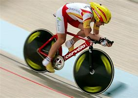
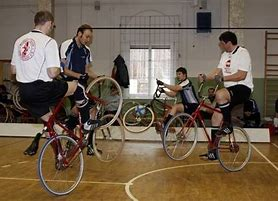
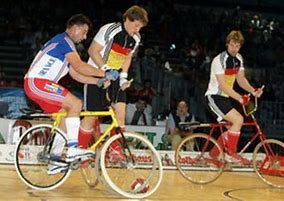

El ciclismo en sala quema aproximadamente 450 calorías en 45 minutos y es un ejercicio excelente para mejorar la forma física y la resistencia cardíaca. El “spinning” trabaja el cuádriceps (músculo frontal del muslo) y los ligamentos de la corva (músculos traseros del muslo), es decir, la fuerza y potencia de las piernas. Como el ciclismo en sala no exige gran agilidad o coordinación, es adecuado para todo el mundo.
En los últimos años en todos los gimnasios se ha desatado la locura del ciclismo en sala. Inventado a principio de los 90 por el ciclista Johnny «G» Goldberg, que buscaba un método sencillo y eficiente de entrenar para sus competiciones, pronto se convirtió en deporte por derecho propio: Una estupenda manera de cobrar más fortaleza física o de volver al ruedo antes del verano.

Calienta al menos durante cinco minutos. Pedalea lentamente un poco una vez sentado. Para mejorar tu forma física en poco tiempo, no dudes en variar la duración, ritmo e intensidad de tus ejercicios. Para trabajar fuerza: aumenta la resistencia de la bici para alcanzar un ritmo de 70 a 80 revoluciones por minuto. Para aumentar velocidad: baja la resistencia de la bici para alcanzar un ritmo de 120 a 130 revoluciones por minuto. Deja volar la imaginación y te motivarás más: Echa una carrera, cruza un puerto de montaña, lánzate ladera abajo, etc. no olvides además variar la posición: Sentado y de pie para trabajar distintos grupos musculares. Y aderézalo todo con algunos ejercicios, por diversión: Pedalea sólo con una pierna, haz abdominales sobre el manillar, etc. Antes de bajarte de la bici, reduce primero la resistencia y luego poco a poco disminuye el ritmo. Sigue disminuyendo la velocidad gradualmente hasta que tus pulsaciones vuelvan a la normalidad. Luego, siéntate recto y respira hondo (inspira y espira lentamente pero hasta el final). ESTIRAR De pie frente a una pared, con las piernas rectas y paralelas a los hombros, estira los brazos hacia arriba y luego dobla el torso hacia delante hasta lograr un ángulo de 90º. Luego estírate. Mantén esta postura unos segundos y luego suelta. De pie con las piernas rectas. Coge el pie izquierdo con la mano izquierda y pega el talón al glúteo para estirar el muslo. Repite el ejercicio varias veces y luego cambia de pierna. Con ambas manos contra la pared y una pierna delante, mueve las caderas hacia delante al tiempo que doblas la rodilla de la pierna delantera. Mantén el talón de la trasera pegado al suelo para estirar así la pantorrilla. Cambia de pierna y repite el ejercicio

Ciclismo en sala Esta se sub-divide en dos categorías: Ciclismo artístico Deporte de interior similar al patinaje artístico sobre hielo y a la gimnasia, practicado con bicicletas especiales y reconocido por la Unión Ciclista Internacional. Es una disciplina que requiere destreza, equilibrio, concentración y coraje. Este deporte es muy popular en Alemania, donde existen 10.000 licencias. Ciclobol Deporte exlusivamente masculino, en el que se enfrentan dos equipos que tratan de meter gol en la portería contraria. Procede del fútbol, pero en el que se utilizan bicicletas
El ciclismo de salón o ciclismo bajo techo, es un programa de entrenamiento sobre una bicicleta de características determinadas y con músicas de fondo. Cada bicicleta posee una resistencia regulable, que se ajusta a las necesidades y nivel de entrenamiento de cada persona. Es una clase impartida por un instructor que la dirige y desarrolla con objetivos, intensidad, y técnica pre establecidos, sin descontar su carisma y el cuidado profesional por los alumnos. El programa fue creado en 1987 (aunque existe otra versión) por el profesor y ciclista norteamericano Johnny Goldberg Spinner. Él intentó conjuntar sus conocimientos como ciclista profesional, cinturón negro de karate y sus estudios de la filosofía Zen, para crear un ejercicio de bajo impacto efectivo. Empezó a enseñar su programa en el garaje de su casa hasta que sus clases se hicieron tan populares que llegaron a los oídos de los directores de los principales gimnasios de Los Ángeles (EE.UU.), llegando a nuestros territorios a fines de los 90. La primera vez que asistí a una clase de ciclismo de salón fue en 1997 en Córdoba, Argentina, en la cuarta convención Internacional de la República de Fitness. En nuestro país esta nueva clase grupal inició su desarrollo tímidamente a fines de los 90, hasta convertirse en una de las clases con más demanda por ciclistas, corredores, y alumnos en general. Como Spinnig se conoció mundialmente el ciclismo estacionario, creado por G. , y con una alianza con STAR TRAC se dio forma a los modelos y productos de venta: las bicicletas para Spinnig. Sobresale México, para Latinoamérica, como líder en ventas de las bicicletas estacionarias.
